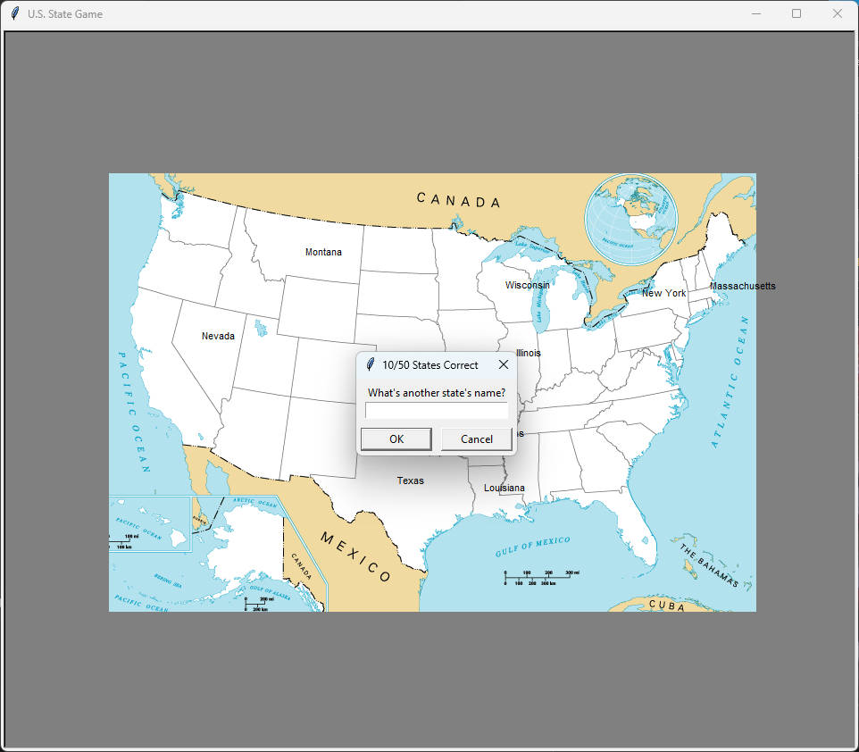

REF
紀錄學習 Udemy-Python-100days of code
Day 25 - Intermediate - Working with CSV Data and the Pandas Library
Python Data Processing
CSV File
csv = Comma Separated Values
sample file
weather_data.csv
1
2
3
4
5
6
7
8
|
day,temp,condition
Monday,12,Sunny
Tuesday,14,Rain
Wednesday,15,Rain
Thursday,14,Cloudy
Friday,21,Sunny
Saturday,22,Sunny
Sunday,24,Sunny
|
基本方式
內建 csv 處理方式
1
2
3
4
5
6
7
8
9
10
11
12
13
|
import csv
# 讀取資料
with open("weather_data.csv") as data_file:
data = csv.reader(data_file)
for row in data:
print(row)
# 抓取 temp 的欄位
temperatures = []
for row in data:
if row[1] != "temp":
temperatures.append(int(row[1]))
|
Pandas
1
2
3
4
5
6
7
|
import pandas
# 讀取資料
data = pandas.read_csv("weather_data.csv")
# 抓取 temp 的欄位
temperatures = data["temp"]
|
Panda
Data Structure
Panda 主要有兩種 data structure
-
Series (1-dimensional): 想像成 list, 一維陣列
-
DataFrame (2-dimensional): 想像成表格, 二維陣列
column: 欄, 直線(上下)
row: 行, 橫線(左右)
存取方式
1
2
|
import pandas as pd
data = pd.read_csv('data.csv')
|
讀取欄位(column)
兩種格式, 類似讀取 dict 或 attribute
-
data["column_name"]
-
data.column_name
根據條件篩選行(row)
data[data.column_name == "condition"]
取得特定 column 和 row 的值
data_condition = data[data.column_name == "condition"]
data_condition.column_name
Example
使用剛剛的 csv 內容
temperatures = data["temp"]
- 取得 day column 中為 Monday 的資料
monday = data[data.day == "Monday"]
- 取得星期一(Monday)的溫度(temp)
- 取得剛剛篩選的 row
- 再提取 temp column
monday = data[data.day == "Monday"] # 取得 day 欄位中為 Monday 的資料存成 dataframe
monday_temp_series = monday.temp # 從 monday dataframe 中取得 temp column 的所有值, 通常會存成 series
從剛剛的第二步可以看到所有 temp column 的 value 和 index
monday_temp_index = monday.temp[index]
index 修改為剛剛第二步中看到的 index 即可取得特定 index 的 value(這裡的 index 一般是 dataframe 原生的 index)
建立 DataFrame
可以從 list 建立, dict 建立, 反正不知道格式就看 doc 或者土法煉鋼
1
2
3
4
5
6
7
8
9
10
11
12
13
|
student_data = {
"name": ["Amy", "James", "Angela"],
"score": [76, 56, 65]
}
data = pd.DataFrame(student_data)
data.to_csv("new_data.csv")
#---------csv.file----------
,name,score
0,Amy,76
1,James,56
2,Angela,65
|
1
2
3
4
5
6
7
8
9
10
11
|
student_data = ["Amy", "James", "Angela"]
data = pd.DataFrame(student_data)
data.to_csv("new_data.csv")
#---------csv.file----------
,0
0,Amy
1,James
2,Angela
|
Turtle
設置/使用 image
screen.addshape()
透過 screen.addshape() 可以將想要使用的圖像檔（如 GIF）放入 Turtle 環境中
圖像可以在後續作為 Turtle 的 shape 使用
1
2
3
|
screen = turtle.Screen()
blank_states_image = "state_game/blank_states_img.gif"
screen.addshape(blank_states_image)
|
turtle.shape()
使用 turtle.shape() 設置的是整個視窗的圖像
這時候的 turtle.shape() 是 global 的 function, 因此不需要先建立 Turtle object 就可以使用
1
2
3
|
import turtle
turtle.shape(blank_states_image)
|
State_Game
使用 Python Turtle 和 Pandas 創建的美國州份猜測遊戲
目標是在美國地圖上正確識別和標記所有50個州份
main.py
1
2
3
4
5
6
7
8
9
10
11
12
13
14
15
16
17
18
19
20
21
22
23
24
25
26
27
28
29
30
31
32
33
34
35
36
37
38
39
40
41
42
43
44
45
46
47
48
49
50
51
52
53
54
|
import turtle
import pandas as pd
data_states = pd.read_csv("state_game/50_states.csv")
states_list = data_states["state"].to_list()
state_count = len(states_list)
correct_answer_list = []
screen = turtle.Screen()
screen.title("U.S. State Game")
blank_states_image = "state_game/blank_states_img.gif"
screen.addshape(blank_states_image)
turtle.shape(blank_states_image)
turtle.bgcolor("gray")
t = turtle.Turtle()
t.penup()
t.hideturtle()
def get_state_location(answer_state):
x = data_states[data_states["state"] == answer_state]["x"].iloc[0]
y = data_states[data_states["state"] == answer_state]["y"].iloc[0]
return x, y
def ask_user_input():
while True:
result = screen.textinput(
title=f"{correct_answer_count}/{state_count} States Correct",
prompt="What's another state's name?").title()
if result:
return result
while len(correct_answer_list) < state_count:
correct_answer_count = len(correct_answer_list)
answer_state = ask_user_input()
if (answer_state in states_list and answer_state not in correct_answer_list):
result = get_state_location(answer_state)
t.goto(result)
t.write(answer_state)
correct_answer_list.append(answer_state)
states_list.remove(answer_state)
if (answer_state == "Exit"):
break
answer_state_remain_dataframe = pd.DataFrame(states_list, columns=["State to learn"])
answer_state_remain_dataframe.to_csv("state_game/state_to_learn.csv")
|
blank_stages_img

Game Pic
